EtherCAT CoE 例程
中文 | English
简介
EtherCAT CoE（CAN over EtherCAT）是 EtherCAT 协议中的一种通信协议，它将 CANopen 应用层协议集成到 EtherCAT 网络中，用于分布式系统中的设备控制和数据交换。它结合了 CANopen 的易用性和 EtherCAT 的高性能优势，广泛用于工业自动化、运动控制和传感器网络等领域。
以下是 CoE 的主要特点和功能：
基于CANopen：
CoE 的应用层直接采用了 CANopen 的设备协议，包括对象字典（Object Dictionary）的结构和服务。
通过对象字典定义设备参数、通信对象和控制数据，确保了设备间的互操作性。
支持标准服务：
SDO（Service Data Object）：用于点对点的配置和诊断通信，允许主站与从站交换大容量数据（如参数配置）。
PDO（Process Data Object）：用于实时通信，传输小数据量的周期性过程数据，支持快速响应。
Emergency（EMCY）消息：用于报告设备异常情况。
NMT（Network Management）：提供网络管理功能，如启动、停止和复位设备。
高效传输：
EtherCAT 的总线结构和高速帧处理能力，使 CoE 能以更低的延迟和更高的效率进行数据交换。
支持多种应用场景：
适用于工业设备配置、实时监控、参数诊断和系统集成等。
对象字典映射：
对象字典以层级结构组织设备的数据和功能。
EtherCAT 使用 CoE 协议访问对象字典中的变量，以实现参数读取、写入和实时控制。
典型应用：
用于支持复杂控制逻辑的驱动器（如伺服驱动）。
用于监控、调试和配置设备的工程工具。
本节将演示如何使用Beckhoff TwinCAT3和EtherKit开发板实现EtherCAT COE主从站通信，该示例工程已支持CSP及CSV两种操作模式。
前期准备
软件环境：
[RT-Thread Studio](https://download-redirect.rt-thread.org/download/studio/RT-Thread Studio_2.2.8-setup-x86_64_202405200930.exe)
硬件环境：
EtherKit开发板
网线一根
Jlink调试器
TwinCAT3配置
在启动TwinCAT3之前，我们还需要做一些配置操作：
安装ESI文件
启动TwinCAT之前，将发布文件夹中包含的ESI文件复制到TwinCAT目标位置：…\TwinCAT\3.x\Config\IO\EtherCAT
注意：当前版本的 ESI 文件位于：…\board\ports\ESI_File\Renesas EtherCAT RZN2 CoE CDP.xml
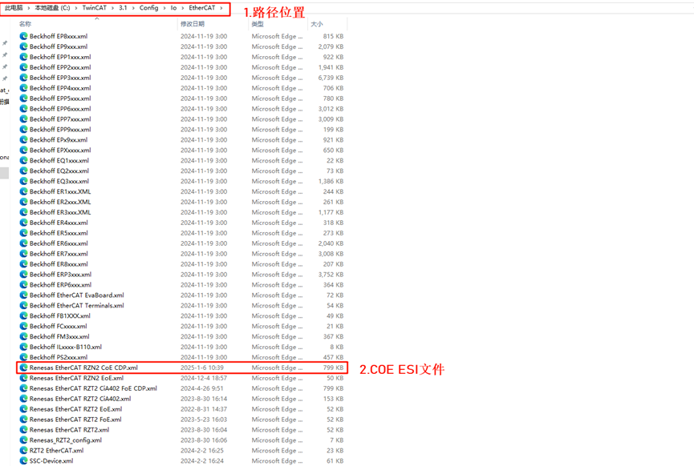
添加TwinCAT网卡驱动
添加 TwinCAT 的以太网驱动程序（仅限首次使用配置即可）；从开始菜单中，选择 [TwinCAT] → [Show Realtime Ethernet Compatible Devise…]，从通信端口中选择连接的以太网端口并安装。

在这里我们能看到目前PC端的所有以太网适配器信息，选择我们测试要用的端口后，点击安装：
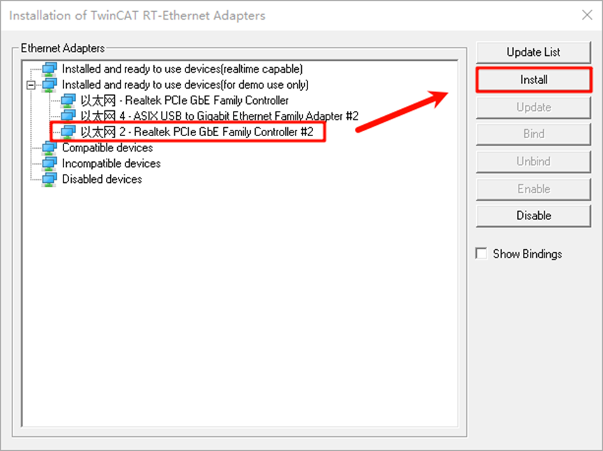
检查网络适配器，可以看到已经成功安装了：
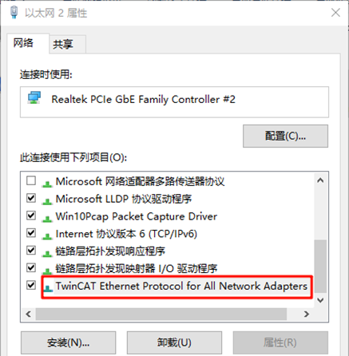
FSP配置说明
接下来就是引脚初始化配置了，打开安装的RZN-FSP 2.0.0，选择我们工程的根目录：

我们进行以下外设及引脚的配置：点击New Stack，并添加 ethercat_ssc_port 外设：

配置ethercat_ssc_port：修改Reset Port为P13_4，同时EEPROM_Size大小设置为Under 32Kbits；
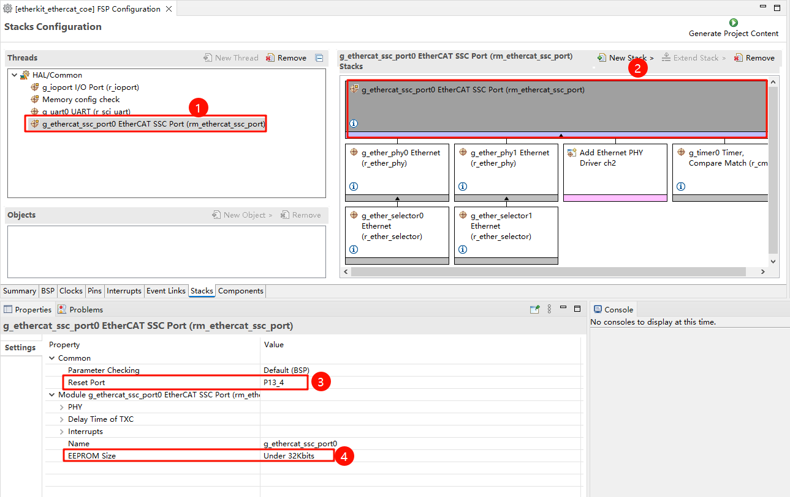使能网卡类型、配置网卡设备参数，这里我们添加两个phy（phy0和phy1），其中需要注意的是，EtherKit使用的是rtl8211网卡，并不在瑞萨FSP的支持范围内，但好在瑞萨预留了用户自定义网卡接口，因此按照如下设置来配置网卡，同时设置MDIO类型为GMAC，设置网卡初始化回调函数phy_rtl8211f_initial()（）；
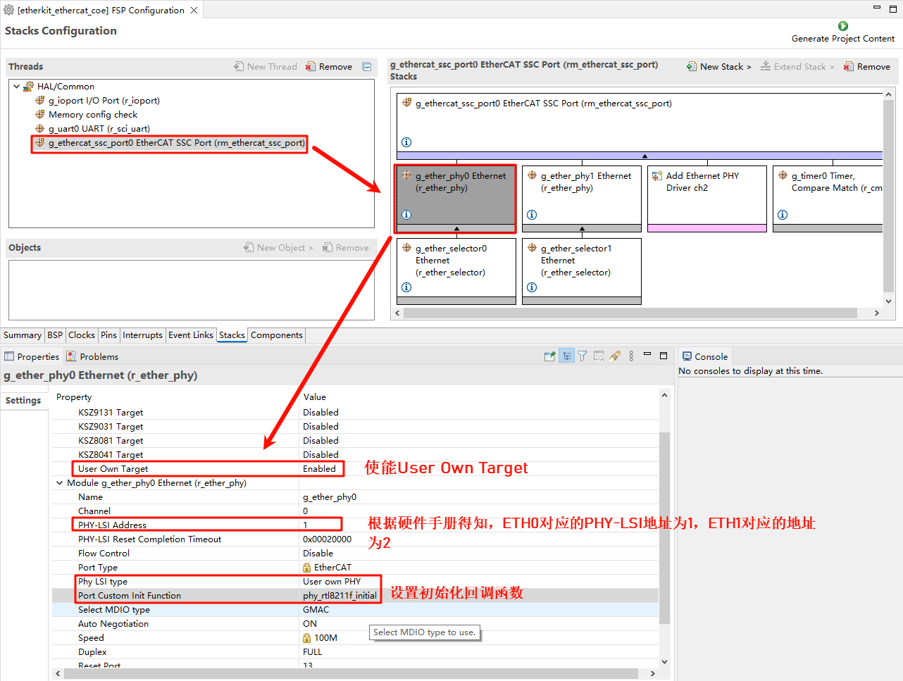
网卡引脚参数配置，选择操作模式为RGMII：

ETHER_ESC设置：

ETHER_GMAC配置：

为ethercat_ssc_port添加cmt定时器并配置中断优先级：

最后点击Generate Project Content生成底层驱动源码。
构建配置
修改sconscript：进入工程找到指定路径下的文件：.\rzn\SConscript，替换该文件为如下内容：
Import('RTT_ROOT')
Import('rtconfig')
from building import *
from gcc import *
cwd = GetCurrentDir()
src = []
group = []
CPPPATH = []
if rtconfig.PLATFORM in ['iccarm'] + GetGCCLikePLATFORM():
if rtconfig.PLATFORM == 'iccarm' or GetOption('target') != 'mdk5':
src += Glob('./fsp/src/bsp/mcu/all/*.c')
src += Glob('./fsp/src/bsp/mcu/all/cr/*.c')
src += Glob('./fsp/src/bsp/mcu/r*/*.c')
src += Glob('./fsp/src/bsp/cmsis/Device/RENESAS/Source/*.c')
src += Glob('./fsp/src/bsp/cmsis/Device/RENESAS/Source/cr/*.c')
src += Glob('./fsp/src/r_*/*.c')
CPPPATH = [ cwd + '/arm/CMSIS_5/CMSIS/Core_R/Include',
cwd + '/fsp/inc',
cwd + '/fsp/inc/api',
cwd + '/fsp/inc/instances',]
if GetDepend('BSP_USING_COE_IO'):
src += Glob('./fsp/src/rm_ethercat_ssc_port/*.c')
CPPPATH += [cwd + '/fsp/src/rm_ethercat_ssc_port']
group = DefineGroup('rzn', src, depend = [''], CPPPATH = CPPPATH)
Return('group')
Kconfig修改：打开工程下的文件（projects\etherkit_ethercat_coe\board\Kconfig），在Onboard Peripheral Drivers选项中加入CoE配置：
config BSP_USING_COE_IO
bool "Enable EtherCAT COE_IO"
default y
config COE_DUMMY_LOG
bool "Enable CoE dummy motor printf"
default n
如下图所示：
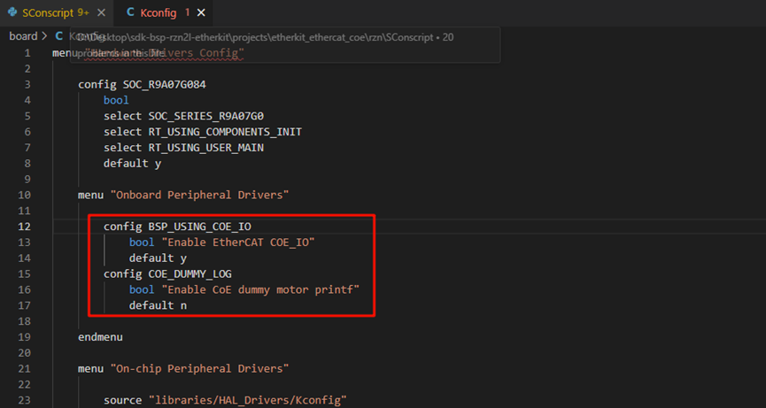
使用studio开发的话需要右键工程点击 同步scons配置至项目；如果是使用IAR开发请在当前工程下右键打开env，执行：scons –target=iar 重新生成配置。
RT-Thread Studio配置
完成FSP配置之后，引脚及外设的初始化就暂告一段落了，接下来需要我们使能EtherCAT EOE示例，打开Studio，点击 RT-Thread Settings，使能EOE示例：

EtherCAT CoE配置
新建TwinCAT工程
打开TwinCAT软件，点击文件->新建->新建项目，选择TwinCAT Projects，创建TwinCAT XAR Project(XML format)工程：

从站启动CoE App
将EtherKit开发板上电后，需要使用网线连接ETH0网口，ethercat会默认运行。
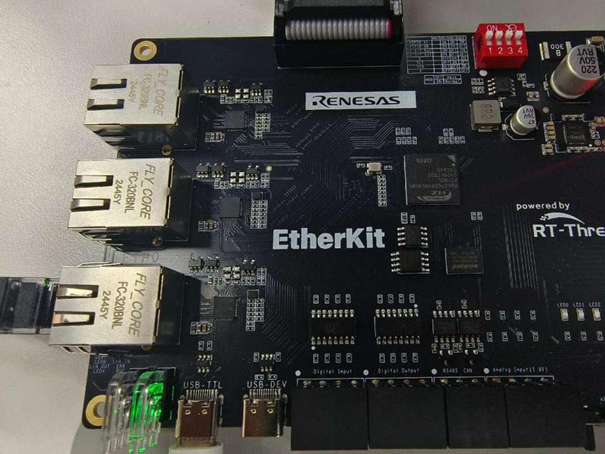
从站设备扫描
新建工程之后，在左侧导航栏找到Devices，右键选择扫描设备。正常来说如果扫描从站设备成功的话是会显示：Device x[EtherCAT]；而扫描失败则显示的是：Device x[EtherCAT Automation Protocol]，此时就代表从站初始化失败。

点击Ok后会弹出一个窗口：Scan for boxes，点击确认后，会再次弹出窗口：Activate Free Run，由于我们首次使用CoE还需要更新EEPROM固件，所以暂时先不激活。
更新EEPROM固件
回到TwinCAT，在左侧导航栏中，由于我们已经成功扫描到从站设备，因此可以看到主从站的配置界面：

我们双击Box 1，在中间界面的上方导航栏中单击EtherCAT，并点击Advanced Settings…：

这里按图示点击Download from List…：

我们写入ESI固件到EEPROM中，这里由于我们配置的是双网口，所以选择Renesas EtherCAT RZ/N2 COE 2port，如果你配置的是三网口的话则选择3port后缀的ESI文件进行下载。

下载完成之后，我们右键Device x(EtherCAT)移除设备后重新扫描并添加设备，并完成激活工作（参考上文）。
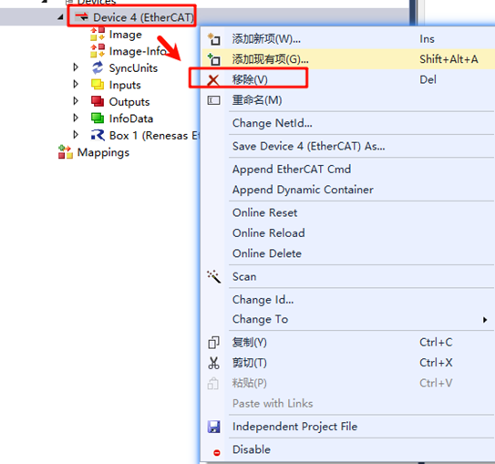
CiA402伺服使用说明
首先来看下CiA402协议：CiA402协议（Communication Interface for Drive Systems）是由CiA (CAN in Automation) 组织定义的，用于工业自动化领域，特别是针对电机控制系统的标准化协议。CiA402是驱动器和运动控制器CANopen设置子协议，定义变频器、伺服控制器以及步进的接口，它是国际标准IEC 61800-7系列的组成部分。CiA402协议基于CANopen通信协议，并在此基础上扩展和优化了用于运动控制系统的功能。它主要用于伺服电机、步进电机以及其他类型的电动驱动系统的控制。
接下来看下FSA（有限状态自动机）显示驱动器的不同状态以及如何执行它们之间的转换。

下面是对应上图各个状态的详细说明：
状态 |
说明 |
|---|---|
初始化 |
伺服初始化：伺服的参数不能设置，不能执行驱动指令功能 |
初始化完成 |
伺服初始化完成，可以设置伺服参数 |
伺服准备好 |
当前状态可以开启主电源，可以设置伺服参数，驱动器处于未激活状态 |
等待伺服使能 |
主电源OK，可以设置伺服参数，等待伺服使能 |
伺服使能 |
伺服使能，按照设置的模式运行 |
快速停机 |
快速停机功能被激活，驱动器正在执行快速停机功能 |
故障停机 |
驱动器发生故障，正在执行故障停机过程中 |
报警状态 |
故障停机完成，所有驱动功能均被禁止，同时允许更改驱动器参数以便排除故障 |
对于控制器来说，在通信的每个周期内，都需要主站向从站发送控制字(control word)，并且接收从站的状态字进行确认，比如说本工程中通过CiA402_StateMachine()实现CiA402的状态切换：
/*---------------------------------------------
- CiA402 State machine
-----------------------------------------------*/
#define STATE_NOT_READY_TO_SWITCH_ON 0x0001 /**< \brief Not ready to switch on (optional)*/
#define STATE_SWITCH_ON_DISABLED 0x0002 /**< \brief Switch on but disabled (optional)*/
#define STATE_READY_TO_SWITCH_ON 0x0004 /**< \brief Ready to switch on (mandatory)*/
#define STATE_SWITCHED_ON 0x0008 /**< \brief Switch on (mandatory)*/
#define STATE_OPERATION_ENABLED 0x0010 /**< \brief Operation enabled (mandatory)*/
#define STATE_QUICK_STOP_ACTIVE 0x0020 /**< \brief Quick stop active (optional)*/
#define STATE_FAULT_REACTION_ACTIVE 0x0040 /**< \brief Fault reaction active (mandatory)*/
#define STATE_FAULT 0x0080 /**< \brief Fault state (mandatory)*/
与此同时，主站通过读取从站的状态字(status word, 0x6041)来了解从站当前正在运行的状态，通过status word可以了解关于从机当前状态和可能发生的故障或警告的详细信息：

而主站通过控制字(control word, 0x6040)向从站发送控制命令，以此来改变其操作状态或触发指定的动作：
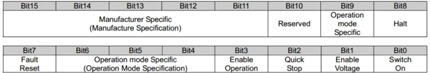
CiA402对象字典定义
下面是有关CiA402对象字典在EtherKit CoE工程中支持的列表，其中已经支持了位置模式及速度模式，可通过主站去设置控制字来与从站的过程数据进行交互，基于CoE协议完成对控制器的读写：
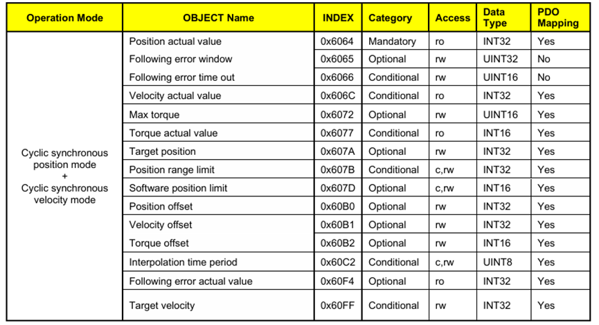

EtherCAT COE测试
首先我们需要确保程序已经正常下载至工程中，同时ESI文件已经成功烧录，下面是开发板串口终端打印信息：
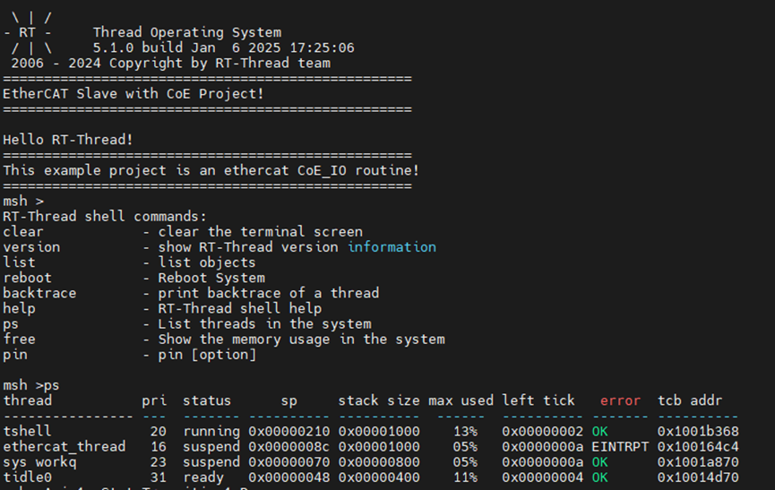
同时我们打开前面新建的ESC工程，并且扫描设备，此时会弹出EtherCAT drive(s) added，我们选择NC – configuration，点击OK后并激活设备：
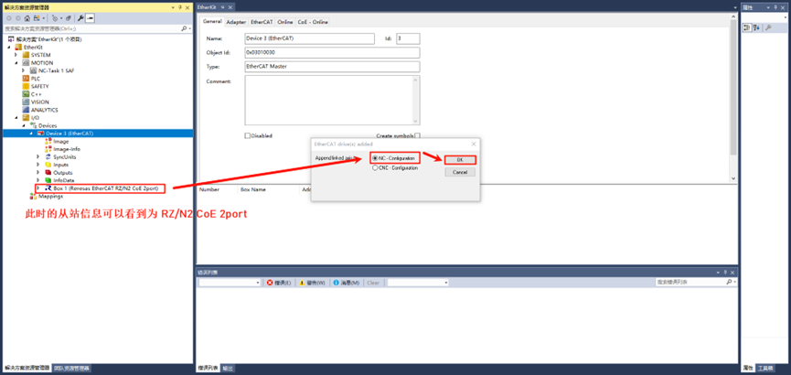
成功激活后，EtherCAT状态机会依次经历Init->Pre-Op->Safe-Op，最后到Op(Operational，可操作状态)，EtherKit CoE工程默认开启csp（周期同步位置模式），并且支持csv（同步周期速度模式）。
当系统上电后，驱动器自动完成初始化，然后进入STATE_SWITCH_ON_DISABLED状态，此时可以对驱动器的工作状态模式进行设置，比如说设置为csp或csv模式等等；同时对应在开发板端能看到当前轴1对应的CiA402状态机信息在不断打印：
csp位置模式控制
先来看下csp模式下的控制器：在位置模式下，我们可以将规划好的目标位置通过写入控制字0x607A设置目标位置，并且对应状态字0x6064可以得到实际反馈的位置信息。
而如果想要在csp或csv模式下操作，必须先将其状态修改为STATE_OPERATION_ENABLED（可操作模式）。
展开左侧导航栏，依次点击Box 1(Renesas EtherCAT RZ/N2 CoE 2port)->Module 1(csp - axis)->Outputs->Control Word，首先需要将状态切换为伺服无故障模式，主站通过向控制字0x6040写入值0x0080(dec:128)，将伺服控制器转变为无障碍状态：
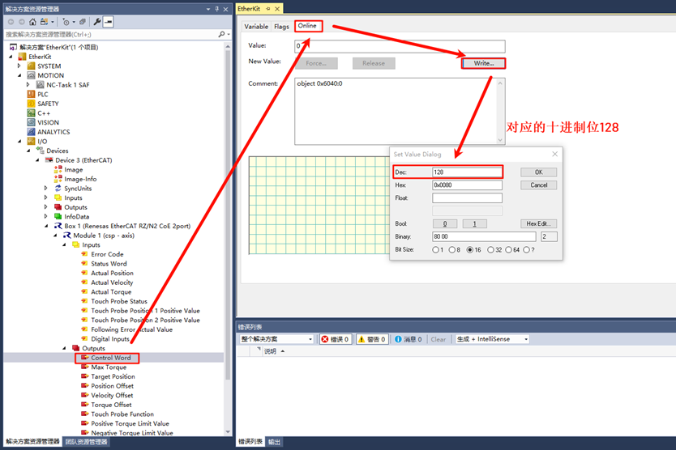
此时可以看到从站串口终端会停止State Transition2、State Transition7的打印，接着我们再次向控制字0x6040写入值0x000F(dec:15)：

此时伺服控制器由等待打开伺服使能切换到伺服运行的状态，同时在从站串口中断打印StateTransition2、State Transition3、State Transition4，在经过状态传输2 3 4后，CiA402状态机进入STATE_OPERATION_ENABLED，此时就可以对控制器进行控制了。
比如说当前是位置模式，通过向Index:0x607A写入位置数值，我们写入100000：

此时依次点击Box 1(Renesas EtherCAT RZ/N2 CoE 2port)->Module 1(csp - axis)->Inputs->Actual Position，查看实际反馈的位置，会发现Index 0x6064对应的value会不断自增，直到100000停止：

csv速度模式控制
首先需要将控制器模式由默认的csp切换为csv模式，点击左侧导航栏中的Box 1(Renesas EtherCAT RZ/N2 CoE 2port)，接着在中间的页面中找到上方的Slots选择Axis 0，在右边预设支持的module修改为csv，并点击‘<’标志：
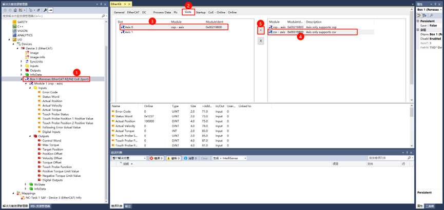
同时我们也可以观察左侧对应的模块信息是否更新，并切换为csv模式：

切换好模式后，我们需要重新加载设备，点击TwinCAT3上方导航栏的TwinCAT->Reload Devices：

然后需要使控制器进入STATE_OPERATION_ENABLED（可操作模式，参考上文），同样是对控制字依次写入0x0080（转变为无障碍状态）、0x000F（由等待打开伺服使能切换到伺服运行状态）。
此时我们查看输入的状态字0x6041，如果对应的value值为0x1237，那么就代表当前处于可操作模式(STATE_OPERATION_ENABLED)；如果显示的值为0x1208，那么代表当前status处于Fault，重新设置control word为0x0080（dec:128），并且在重复上述操作即可。
此时我们便可对Target Velocity值进行写入实际想要控制的速度值：
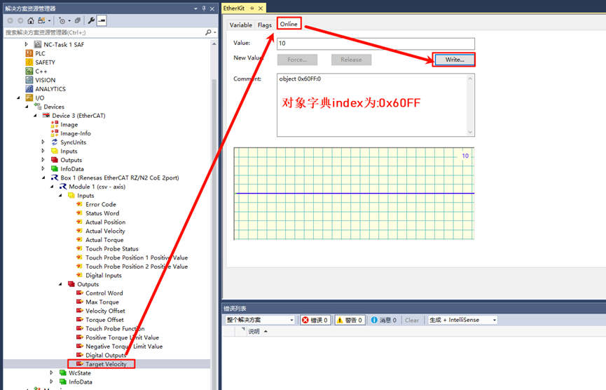
同时可在输入中查看实际设置的速度信息是否一致：
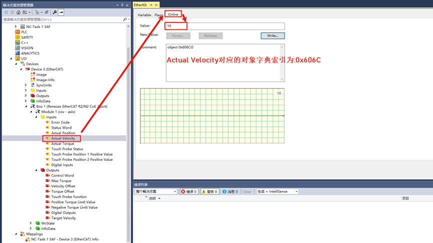